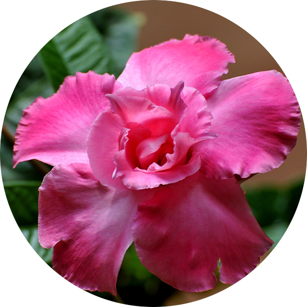
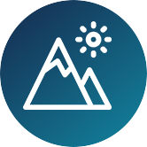
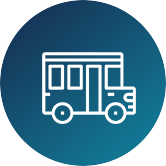

오늘의 농업 신호
뉴스, 식물 반응, 지원사업을 한 화면에서 정리합니다
흩어진 농업 정보를 자동으로 모으고, 중요한 흐름만 먼저 보여주는 공개형 농업 정보 보드입니다.
신규 수집
0건
가장 많은 분류
-
주요 키워드
-


농업 뉴스 0
식물 리뷰 0분류 흐름
0건 신규상위 키워드
0개최근 중요 정보
Collected Info
수집된 정보
Sources